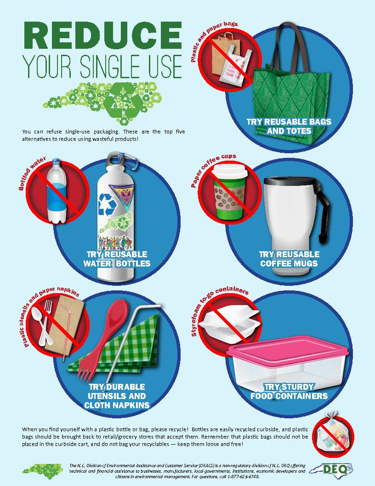
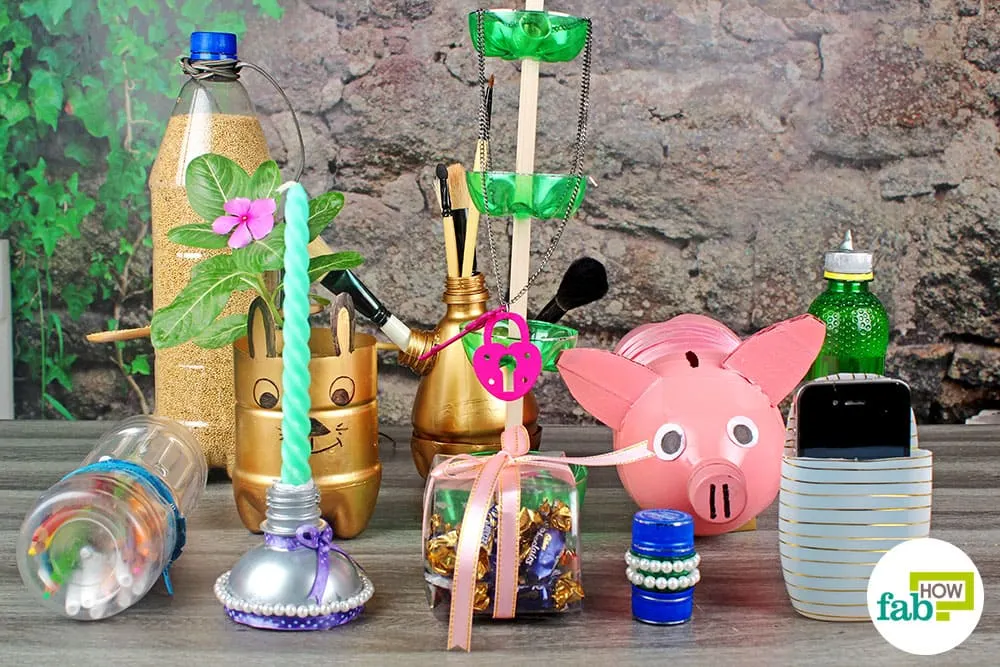
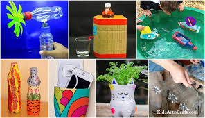
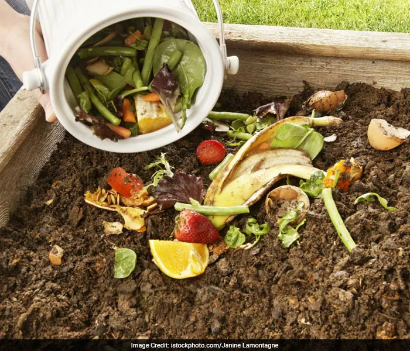

Waste management
Waste management is the process of collecting, transporting, processing, recycling, and disposing of waste materials in a way that reduces their harmful effects on people and the environment. It covers all types of waste—household, industrial, agricultural, and hazardous.
Why it is important:
- Protects the environment – Prevents pollution of air, water, and soil caused by improper disposal.
- Reduces health risks – Minimizes the spread of diseases from waste accumulation.
- Conserves resources – Recycling and reusing materials save raw materials and energy.
- Reduces landfill use – Decreases the need for large dumping sites.
- Supports sustainable development – Promotes eco-friendly practices for future generations.
- Improves quality of life – Keeps communities cleaner and more pleasant to live in.
The Three R's - Reduce, Reuse, Recycle
This is the cornerstone of sustainable living. It's a simple hierarchy for managing waste.
1. Reduce:
|  |
The most important step. Minimize the amount of stuff you buy and consume.
- Avoid Single-Use Plastics: Say no to plastic straws, cutlery, and bags.
- Buy in Bulk: Purchase items with less packaging.
- Go Paperless: Choose digital bills and statements.
|
2. Reuse:
Before you throw something away, think if it can be used again. This extends the life of products and saves resources.
- Repurpose Containers: Use glass jars for storage.
- Repair, Don’t Replace: Fix clothes and electronics.
- Donate or Sell: Give items a new home.
|
 |
3. Recycle & Compost:
|  |
 |
Properly sort your waste. Recycling turns old products into new ones, and composting creates nutrient-rich soil.
- Know Local Rules: Learn what can and cannot be recycled in your area.
- Start Composting: Collect fruit, vegetable scraps, and yard waste.
|
 Our Sustainable Future
Our Sustainable Future